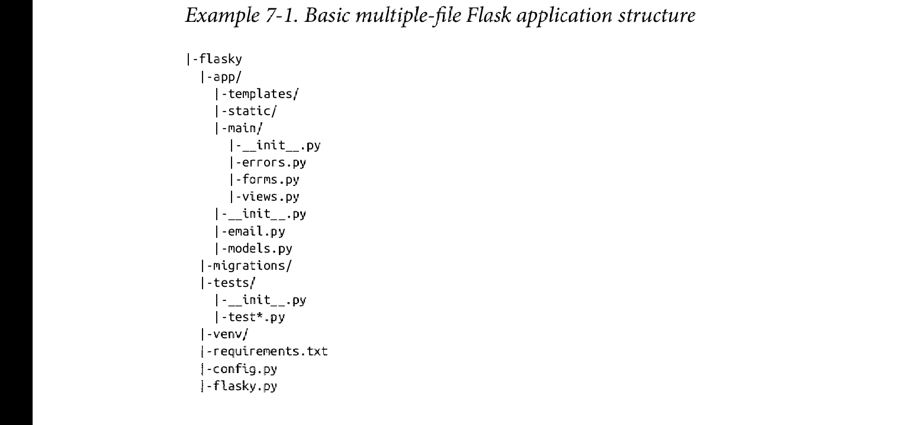
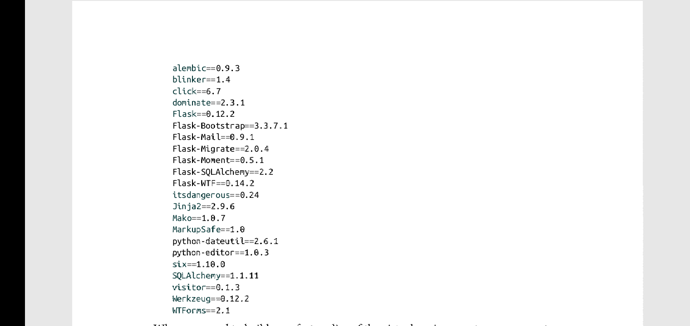

概述
尽管将app代码存储在单一的文件里很方便，但这种方式不具有递增适应性，当项目逐渐复杂，这种代码组织方式不利于项目维护和调试，并且容易出错。
Project Structure
flask并不强制性地限定项目的结构，而是由程序员来决定项目的组织方式。以下是使用的项目结构:

该结构有四个顶级文件夹:
- app: 包含了flask 应用程序。
- migrations: 包含数据库迁移脚本。
- test: 包含单元测试代码。
- venv: 包含python 虚拟环境。
以及其他一些文件:
- requirements.txt: 包含包依赖。这使得在其他计算机上产生相同的python 虚拟环境变得容易。
- config.py: 包含了应用配置信息。
- flasky.py: 包含了app实例，以及有利于管理应用程序的任务。
Configuration Options
应用通常需要多个配置集。比如，在开发，测试，和产品阶段必须使用不同的数据库，以免影响彼此。
以下是使用配置类来管理配置信息:
# config.py application configuration
# 定义所有阶段都需要的配置信息
import os
basedir = os.path.abspath(os.path.dirname(__file__)
class Config:
SECRET_KEY = os.environ.get('SECRET_KEY') or 'hard to guess string'
MAIL_SERVER = os.environ.get('MAIL_SERVER', 'smtp.qq.com')
MAIL_PORT = int(os.environ.get('MAIL_PORT', '465'))
MAIL_USE_TLS = os.environ.get('MAIL_USE_TLS', 'False').lower() in ['true', 'on', '1']
MAIL_USERNAME = os.environ.get('MAIL_USERNAME')
MAIL_PASSWORD = os.environ.get('MAIL_PASSWORD')
FLASK_MAIL_SUBJECT_PREFIX = '[Flasky]'
FLASK_MAIL_SENDER = '1558911620@qq.com'
FLASK_ADMIN = os.environ.get('FLASK_ADMIN')
SQLALCHEMY_TRACK_MODIFICATIONS = False
@staticmethod
def init_app(app):
pass
class DevelopmentCofig(Config):
DEBUG = True
SQLALCHEMY_DATABASE_URI = os.environ.get('DEV_DATABASE_URL') or 'sqlite:///' + os.path.join(basedir, 'data-dev.sqlite')
class TestingConfig(Config):
TESTING = True
SQLALCHEMY_DATABASE_URI = os.environ.get('TEST_DATABASE_URL') or 'sqlite://' # 一个在内存中的数据库
class ProductionConfig(Config):
SQLALCHEMY_DATABASE_URI = os.environ.get('DATABASE_URL') or 'sqlite:///' + os.path.join(basedir, 'data.sqlite')
config = {
'development': DevelopmentConfig,
'testing': TestingConfig,
'production': ProductionConfig，
‘default': DevelopmentConfig
}
Config类定义了所有过程都需要的配置信息，其他的子类为特定过程定义额外的配置信息。后期也可以添加其他子类来支持其他的过程配置。
所有配置基本上是通过导入环境变量来导入，也提供了默认值用在测试过程中。
测试用的是内存数据库，因为没有必要存储测试用的数据。
Config类提供了一个可供用户自定义配置的类方法: init_app()
Application Package
app文件夹包含了应用代码，模版以及静态文件。以及数据库模型和邮件支持。Using an Application Factory
在单个文件中创建app的方式很方便，但是这有一个巨大的缺点。因为app被创建作为一个全局变量，因此无法动态修改app的配置信息: 代码运行后，app实例就已经被创建了，因此去实施配置信息改变时机太晚。对单元测试来说，这特别有用，有时候为了更好的测试，很有必要在不同配置设置下运行程序。
解决方法是将app的创建移到工厂函数中来推迟app的创建，这个可以显式地在代码中调用。这不仅创建了用于动态设置配置信息的时间，而且可以创建多个app实例，这俩功能在测试期间也很有用。以下是工厂函数的定义:
# app/__init__.py: application package constructor from flask import Flask, render_template from flask_bootstrap import Bootstrap from flask_mail import Mail from flask_moment import Moment from flask_sqlalchemy import SQLAlchemy from config import config bootstrap = Bootstrap() mail = Mail() moment = Moment() db = SQLAlchemy() def create_app(config_name): app = Flask(__name__) app.config.from_object(config[config_name]) config[config_name].init_app(app) bootstrap.init_app(app) mail.init_app(app) moment.init_app(app) db.init_app(app) #attach ruotes and custom error pages here return app
app.config.from_object()函数可以从类中导入配置信息。
Config的子类中的init_app()函数允许执行更加复杂的初始化过程。
工厂函数返回创建并配置好的app实例，但是当前这个app实例并不完整，因为它缺少routers和error handler。而这缺少的部分将在下一小结不全。
Implement Application Functionality in a Blueprint
工厂函数的使用带来了一种对定义routers的错乱。在单文件应用里，app实例在全局作用域里有效，因此，router可以通过使用app.route()装饰器来简单创建router。但是现在app实例是在运行时被创建，而app.route()装饰器只在create_app()被调用后才有效，这个时候再定义router已经太晚了(装饰器是在代码检查时被创建，而非程序运行时)。error page handlers也存在同样的问题。
幸运的是，flask提供了一个更好的解决方法: 使用blueprint。blueprint类似于一个应用程序，也可以包含router和error page handlers.两者之间的差别是: 当router和error page handlers定义在blueprint里时，它们处于蛰伏状态，直到app注册这些blueprints,它们才成为应用程序的一部分，这有点类似于安卓应用里的插件。当在全局作用域定义blueprints，应用的router和error page handler也就可以使用单文件里一样的方式来定义。类似于app, 一个blueprint可以完全定义在单一的文件中或者定义在包含多个文件的模块中。以下是代码:
# app/main/__init__.py: main blueprint creation
from flask import Blueprint
main = Blueprint('main', __name__)
from . import views, errors
blueprint通过实例化类Blueprint来创建。其构造器接受两个参数: 一个是blueprint名字，一个是包含blueprint的模块或包的名字。和Flask()一样，对第二个参数__name__变量通常都是正确的。
应用的 route和error handler分别在app/main/view.py和app/main/error.py里。导入这些模块导致其和blueprint相关联。需要注意的是，这些导入语句是写在app/main/__init__.py的底部上的，这是为了避免循环依赖导致的错误。在这里__init__.py导入view.py和error.py时，view.py和errors.py将依次导入main blueprint对象，所以导入将失败，除非循环引用发生在main对象被创建后。
注意from . import <some-module>表示相对导入。这里的 . 代表当前包。而from .. import <some-module>中的 .. 当前包的父包。
以下是注册blueprint的代码:
# app/__init__.py main blueprint registration def create_app(config_name): #... from .main import main as main_blueprint app.register_blueprint(main_blueprint) return app
error handlers的代码:
# app/main/errors.py errors handlers in main blueprint
from flask import render_template
from . import main
@main.app_errorhandler(404)
def page_not_found(e):
return render_template('404.html'), 404
@main.app_errorhandler(500)
def internal_server_error(e):
return render_template('500.html'), 500
在blueprint中编写error handler的一个不同之处在于: 如果使用errorhandler装饰器，那么由此产生的error handler只会被该blueprint所定义的route所产生的error激活。而要安装应用程序级别的异常处理器,那么必须安装app_errorhandler装饰器。
以下是在bluelprint中定义的route的代码:
# app/main/views.py application routes in main blueprint
from datetime import datetime
from flask import render_template, session, redirect, url_for
from . import main
from .. import db
from ..models import User
@main.route('/', method=['GET', 'POST'])
def index():
form = NameForm()
if form.validate_on_submit():
#...
return redirect(url_for('.index'))
return render_template('index.html', form=form, name=session.get('name'), known=session.get('known', False), current_time=datetime.utcnow())
相对于单一文件,在blueprint中编写view function的两大差别是: 一， 使用main.route()而不是app.route()。二，在基于app的route里，url_for()函数的参数是endpoint的名字(通常是view function的名字)。
在blueprint中的不同是，flask为所有由blueprint定义的endpoint添加了一个命名空间，因此多个blueprint可以定义相同endpont的view function而不至于引发冲突。命名空间的名字就是blueprint的名字(由Blueprint()构造器的第一个参数决定)，由一个 . 好来分隔命名空间和endpoint名字。因此main blueprint定义的index() view function可以通过endpoint名main.index来注册.
url_for()函数也支持endpoint名字的缩写，在这里的话，blueprint名字被省略。比如url_for('.index').这也就意味着在相同blueprint里，可以使用endpoint名字的缩写形式来redirect。但是在多个不同的blueprint中redirect，必须使用endpoint名字的完整限定形式。
表单对象存储在app/main/forms.py模块中。
Application Script
flasky.py模块定义了app 实例。
# flasky.py: main script
import os
from app import create_app, db
from app.models import User, Role
from flask_migrate import Migrate
app = create_app(os.getenv('FLASK_CONFIG') or 'default')
migrate = Migrate(app, db)
@app.shell_context_processor
def make_shell_context():
return dict(db=db, User=User, Role=Role)
因为程序主要文件从hello.py改变至flasky.py,所以要相应的更新FLASK_APP环境变量。
Requirement File
requirements.txt文件包含应用程序所用的依赖包及其精确的版本号。这在需要在其他计算机上重建相同的虚拟环境(virtual enviroment)中，而产品级应用程序将部署在该计算机上时，该文件非常有用。可以通过如下命令来自动产生该文件。
(venv) $ pip freeze > requirements.txt
当有新的包被安装或被更新时，应该更新该requirements.txt文件。requrements.txt文件内容可以是:

你可以通过如下命令来在其他计算机上重建相同的虚拟环境:
(venv) $ pip install -r requirements.txt
Unit Test
以下代码定义了两个简单的测试:
# test/test_basics.py: unit tests
import unittest
from flask import current_app
from app import create_app, db
class BasicTestCase(unittest.TestCase):
def setup(self):
self.app = create_app('testing')
self.app_context = self.app.app_context()
self.app_context.push()
db.create_all()
def tearDown(self):
db.session.remove()
db.drop_all()
self.app_context.pop()
def test_app_exists(self):
self.assertFalse(current_app is None)
def test_app_is_testing(self):
self.assertTrue(current_app.config['TESTING'])
该测试使用python标准库中的标准unittest包，而测试用例的setup()和tearDown()函数分别在每个测试用例之前和之后运行，任何以test_开头的方法均在测试中被执行。
为了使test目录成为一个正确的包，需要在test目录里创建一个__init__.py文件，该文件可以为空。
可以想flasky.py文件理论添加一个自定义命令来运行单元测试。以下是如何添加test命令的代码:
# flasky.py: unit test launcher command
# 这里的cli代表 command line interface的首字符缩写
@app.cli.command()
def test():
"""Run the unit tests"""
import unittest
tests = unittest.TestLoader().discover('tests')
unittest.TextTestRunner(verbosity=2).run(tests)
app.cli.command装饰器使得自定义命令变得非常容易。被装饰的函数的名字被用作命令名，而函数的docstring被用作函数的帮助信息。可以使用如下命令来执行单元测试:
(venv) $ flask test
Database Setup
三个流程所使用的数据库uri都不一样，但是数据库必须被创建，需要时得更新。flask db upgrade
Running Application
重构已完成，可以运行应用程序了。更新FLASK_APP环境变量后，运行flask run命令。